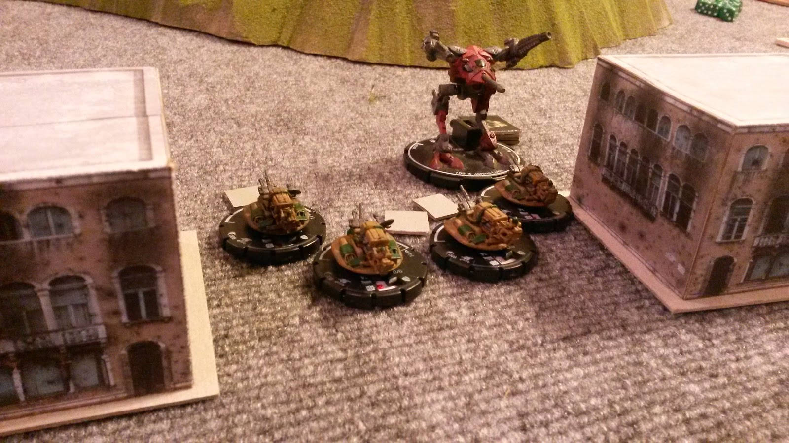
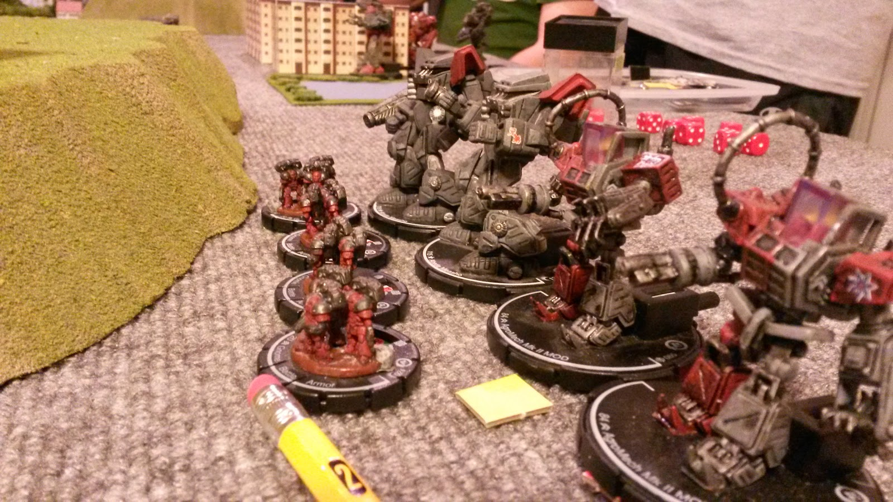
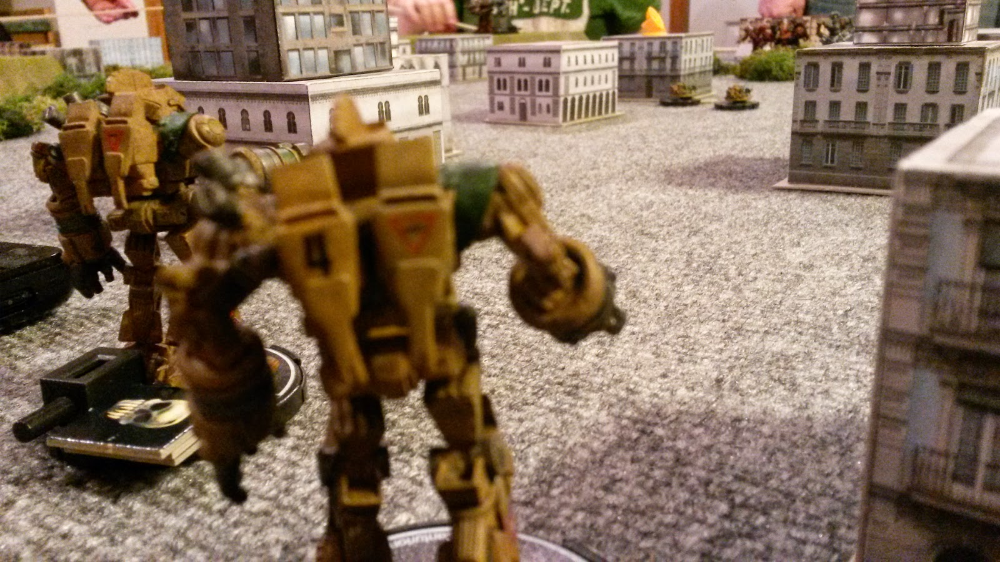

Read the color behind the current number. Speed, Attack, and Defense each have their own table. For damage, also check the printed weapon symbol: Ballistic and Rocket use the Ballistic table; Energy and Melee have separate tables. Changing a Ballistic weapon to a Rocket does not change its equipment.
These are shorter Revived rules for the original named abilities, including purple equipment from Domination. Use the effects below, not the original rule text. White, yellow, and unlisted combat colors give no ability. Heat colors follow the separate heat rules. Circle and square backgrounds still work alike in Revived, with no consumable damage cost.
Abilities apply while showing. Read equipment before each attack and keep it for that attack. A second attack reads the new dials. An ability is optional unless it is Salvage. Passive protection still works during Salvage or shutdown; shutdown prevents active abilities and Grapple.
The examples below use only the modifiers they mention.
Speed

| Color | Ability | Effect |
|---|---|---|
| Green | Camouflage | +1 ranged defense while in terrain cover. |
| Red | Evade | +1 ranged defense; Disengage without damage. |
| Blue | Jump Jets | May Jump; Disengage without damage. |
| Black | Electronic Camouflage | Cannot be targeted by indirect fire or Streak Missiles. Ordinary direct shots still work. |
| Gray | Infiltrate | Deploy after ordinary groups, up to 4 inches beyond your deployment zone. |
| Purple | Reconnaissance | If speed is above zero, add 2 inches to Move. This remains a normal activation and recovers readiness. |
Camouflage and Evade: Infantry in woods gets +3 cover. Camouflage adds +1 ranged defense, even if Decoy also applies: equipment defense bonuses together stop at +1. Evade works in the open too and normally removes Disengage damage.
Electronic Camouflage: A hidden tank cannot be targeted by indirect Rockets or Streak. An enemy that moves into direct sight may shoot it normally.
Reconnaissance: A speed-6 vehicle Moves up to 8 inches and becomes Ready. Its Advance allowance is still 3 inches.
Infiltrate: Every member of a group must show it at Start to use it. Place all ordinary groups first, then alternate infiltrating groups, starting with the player who deployed first. Keep every base at least 8 inches from enemies and outside the enemy deployment zone, in legal terrain. A loaded carrier cannot Infiltrate. A group may choose ordinary deployment instead. Use the starting click's allowance only; later Infiltrate clicks do not grant another deployment.
Infiltrate: Two squad members have gray speed, but the third does not. The squad deploys normally; the first two cannot infiltrate separately.
Jump
Blue speed grants Jump to any unit. Ignore bases and terrain along the route, but your whole base must fit where you land. Vehicles and ’Mechs cannot land in fieldworks. Jump cannot be used with Rush. Other actions keep their usual movement allowance; Jump grants no extra distance.
A ’Mech gains 1 extra heat when it Jumps. Death from Above already includes that heat in its total of 2. Infantry and vehicles ignore heat. Jump Jets and Evade waive Disengage damage even when you walk; Grapple overrides that benefit.
An unengaged ’Mech with Jump may use Death from Above. An ordinary jumping Assault uses half speed, with no DFA damage bonus or landing damage.
Jump: A speed-8 ’Mech may jump up to 4 inches with Assault, clearing a building but landing beside its target. It gains 2 heat: 1 for Assault and 1 for Jump.
Attack


| Color | Ability | Effect |
|---|---|---|
| Green | Repair | Use Repair to restore 1 click to an eligible friendly unit in base contact. |
| Red | Bypass | Use Bypass to take control of an empty enemy vehicle or ’Mech in Salvage or shutdown. |
| Blue | Improved Targeting | +1 attack, ranged or close. Also applies to Bypass. |
| Black | Salvage | May only Move, Hold, Vent, or Disengage. No attacks or active support abilities. |
| Gray | Command | Once per army per round, link one nearby friendly group's activation to this group's activation. |
| Purple | Coolant Flush | Use Coolant Flush to remove 2 heat from a friendly ’Mech in base contact. |
Improved Targeting: Printed attack 8 becomes 9 for a shot, a close attack, or Bypass. It does not change the dice.
Salvage in squads: A salvaged member cannot attack or use active equipment. If the squad chooses an action it cannot perform, that member stays still and skips it. It still pays any squad pushing damage. A squad can recover normally. Salvage does not prevent contesting objectives or passive protection.
Salvage: A Committed squad Fires. Its salvaged member makes no attack but still takes 1 pushing damage after skipping its action, if alive.
Command: After this group finishes its activation, one friendly, unactivated group within 6 inches of the commander may activate immediately. Then the opponent takes their turn. Every base of the chosen group must be within 6 inches. Both groups spend their normal activation; Command grants no second activation and cannot chain. The commander must be on the battlefield, not shutdown, and still show Command. Spent groups must still recover. One use per army per round, however many commanders it has.
Command: Your commander acts, then links a nearby Spent vehicle. The vehicle immediately Moves or Holds to recover, using its normal activation. Your opponent acts next.
Repair and Coolant Flush
Both actions stay still and require base contact. Neither unit may touch an enemy. You cannot target yourself or passengers. A ’Mech using either action gains 1 heat. Non-’Mechs leave readiness unchanged and cannot use either while Spent.
Repair restores 1 combat click, stopping at Start or a black repair mark. If a repair mark is already showing, no repair is possible. Infantry repair only infantry; battle armor, vehicles, and ’Mechs repair those three types. Repair cannot restore a destroyed unit or cool heat.
Coolant Flush removes 2 heat, stopping at the green heat Start. It can restart a shutdown ’Mech, but does not remove its activation marker. Neither action needs a roll, clears readiness, or grants an activation.
Repair: Restoring one click reaches a black repair mark. That repair succeeds, but another Repair cannot move the dial past the mark.
Coolant Flush: An already-activated ’Mech is three heat clicks from Start. Flush leaves it one click from Start; it remains already activated.
Bypass
Choose an enemy vehicle or ’Mech showing Salvage, or a shutdown ’Mech. It must carry no passengers and must not touch another unit friendly to its owner. The attacker needs Bypass and printed attack above zero, but needs no damage value. Any unit type may attempt it.
Move up to half speed and finish in front-arc contact, or pivot in existing contact. Make one close attack using normal attack, rear, shutdown, and defense modifiers. On a hit, deal no damage: take control of the target. A critical hit gives no extra effect; a critical miss still deals 1 unavoidable damage to the attacker. Bypass is a combat order for readiness, or costs a ’Mech 1 heat, plus Jump heat if used.
Mark the captured unit as already activated this round. Keep its dial, heat, readiness, and pilot; next round it is a separate group in its new army. It cannot immediately attack its former allies. Existing contacts remain until someone Disengages. Capture does not change either starting roster, force limits, or escape quota. For casualty scoring, a captured unit counts as lost by its original owner while enemy-controlled, or if later destroyed; count its points only once. If recaptured, it stops counting as lost until lost again. It contests and scores objectives for its current controller.
Bypass: An eligible shutdown ’Mech has defense 18, reduced to 16. Attack 7 + dice totaling 9 hits and captures it without damage. Mark it activated; it cannot act for its new owner this round.
Defense

| Color | Ability | Effect |
|---|---|---|
| Green | Decoy | +1 ranged defense, in or out of cover. |
| Red | Reflective Armor | Armor 2 against Energy shots. |
| Blue | Reactive Armor | Armor 2 against Ballistic and Rocket shots. |
| Black | Hardened Armor | Armor 2 against ranged and close attacks. |
| Gray | Heavy Armor | Armor 1 against ranged and close attacks. |
| Purple | Advanced Anti-Missile System | After armor, reduce Ballistic or Rocket damage to this unit or a friendly unit within 6 inches by 1. |
Use only the best armor, up to 2. Ordinary Piercing ignores 1 armor; Armor Piercing equipment ignores all armor. Armor never reduces unavoidable damage. Infantry replace any armor benefit with +1 defense against the same attack types.
Only one anti-missile system may protect a target from each attack. It needs no sight, works after Piercing and armor, and can reduce damage to zero. It does not protect passengers separately while they are aboard or reduce close or unavoidable damage.
Armor: A damage-3 Ballistic hit against a vehicle with Reactive Armor 2 deals 1. An Energy hit of 3 against Reflective Armor 2 deals 2, because Energy ignores 1 armor.
Infantry armor: Reactive Armor on infantry gives +1 defense against Ballistic and Rocket shots. It does not subtract damage from a hit.
Anti-missile system: A Ballistic hit deals 3. Hardened Armor removes 2 and one nearby system removes the last 1. A second system adds no further protection.
Ballistic and Rocket damage


| Color | Ability | Effect |
|---|---|---|
| Green | Homing Beacon | Instead of damage, mark a vehicle or ’Mech you hit. Friendly Ballistic and Rocket shots ignore its terrain cover until round end. |
| Red | Armor Piercing | Ranged attacks ignore all armor. |
| Blue | Anti-Personnel | After a ranged hit, one other enemy infantry base within 2 inches of the target takes 1 damage, reduced by its armor. |
| Black | Streak Missiles | With Fire, may ignore sight blockers at −1 damage. Keep range, arc, and cover; cannot target shutdown or Electronic Camouflage. |
| Gray | Point Defense System | A friendly unit touching this unit may use this unit's printed defense if higher. |
| Purple | Artemis V Fire-Control System | +1 ranged damage. |
Homing Beacon is declared before rolling and deals no damage, including critical damage. The shot otherwise follows its weapon's normal rules. It does not grant sight, range, extra attacks, or another activation. Marking the same target again adds nothing. Remove the mark at round end, even if the firing unit is destroyed earlier.
Homing Beacon: You mark a vehicle in woods. It takes no damage from that shot. A later friendly Ballistic shot ignores its +1 terrain cover, but still needs sight and range.
Anti-Personnel affects only one extra enemy infantry base, never the original target or a friendly base. Choose it after the hit; it need not be in sight or weapon range, but cannot touch a friendly unit. Apply its own armor and anti-missile protection. There is no extra roll, critical bonus, weapon bonus, or further splash.
Anti-Personnel: A hit has two other enemy infantry bases within 2 inches. Choose one for the extra 1 damage; the other is unaffected.
Streak is an alternative to a normal shot. It ignores blocking terrain and intervening bases, but not the prohibition on shooting into friendly contact. It takes no indirect-fire attack penalty and gets no rear bonus. Electronic Camouflage and shutdown block only the Streak option, not an otherwise legal ordinary shot. Rocket weapons still require Fire.
Streak: A damage-3 weapon Fires through a building using Streak. Its damage becomes 2 before armor; it takes no −2 indirect attack penalty. A shutdown target would make this option illegal.
Point Defense uses the donor's printed defense, never a value borrowed from another unit. The target then applies its own modifiers and equipment. It does not borrow armor. Passengers cannot provide or receive it while aboard.
Point Defense: Infantry with defense 15 touches a donor with printed defense 18. It uses 18, then adds its own +3 woods cover for ranged defense 21. It borrows no armor.
Armor Piercing and Artemis: A damage-3 hit with Armor Piercing ignores Armor 2 and deals 3 before other protection. With Artemis instead, damage becomes 4 and that armor reduces it to 2.
Energy damage


| Color | Ability | Effect |
|---|---|---|
| Green | TSEMP | After a ranged hit damages a surviving target, raise a non-’Mech group's readiness by one step, or give a ’Mech 1 heat. |
| Red | Pulse | After a ranged hit, may make one more shot at the same target with −2 attack. A ’Mech gains 1 extra heat if it makes the second roll. |
| Blue | Grapple | Touching enemy vehicles and ’Mechs must pay Disengage damage, even if a pilot or equipment would waive it. |
| Black | Alpha Strike | ’Mech only: with Fire, add 2 damage, then shut down. |
| Gray | Flamers | May make a close attack with this weapon, even on a vehicle: +1 damage against infantry or vehicles; against ’Mechs, deal 2 heat instead of damage. |
| Purple | PPC Capacitor | +1 ranged damage. A ’Mech gains 1 extra heat if used. |
TSEMP changes Ready to Committed or Committed to Spent; Spent stays Spent. It causes no pushing damage or immediate activation. A squad shares the changed state. Apply target heat normally, including shutdown and stress.
TSEMP: A surviving member of a Committed squad takes damage from TSEMP; the whole squad becomes Spent. The other members take no pushing damage from this change.
Pulse's second attack uses the same weapon and requires a surviving, legal target and attacker. Read their new dials; loss of Pulse after the first attack prevents the second. It cannot trigger another Pulse. Pay action heat once and ordinary Energy heat once for the whole action, plus 1 for the second roll. Resolve critical-miss damage after each roll. A miss on the first attack grants no second attack.
Pulse: A ’Mech Fires with attack 8 and hits. If the target remains legal, its second shot uses attack 6 and the target’s new dial. Two rolls cost 3 heat total: Fire, Energy, and Pulse.
Grapple works while its Energy damage color is showing, even when using another weapon. It never increases Disengage damage beyond the usual 1 and does not operate while the grappler is shutdown or in Salvage. Multiple grapplers do not stack.
Grapple: A Skirmisher disengages from an active grappler. It still takes 1 damage; even two grapplers would not increase that cost.
Alpha Strike requires a functioning heat dial and is declared before rolling. Use damage at the current heat position; its +2 is outside the equipment/pilot bonus limit. Resolve the attack and any critical-miss damage, then turn the surviving attacker to its first shutdown position, even on a miss. This replaces all heat from that action. It gives no extra shot. A unit already shutdown cannot use it.
Alpha Strike: Damage 3 after heat becomes 5 before other modifiers. Whether the shot hits or misses, the surviving attacker shuts down instead of adding normal action and weapon heat.
Flamers may be used with Fire or Assault. Against a ’Mech, a hit deals only 2 heat, even on a critical hit; shutdown ’Mechs ignore it. Other close attacks remain available to units normally allowed to make them. No Energy shooting bonus or extra weapon heat applies to a close Flamer attack. Its +1 damage shares the equipment/pilot limit.
Flamers: A vehicle hits a ’Mech in close combat. The target gains 2 heat and takes no combat-dial damage. The vehicle still commits or pushes for its Fire order.
PPC Capacitor: A ’Mech with damage 3 uses the capacitor with Fire. It shoots at damage 4 and gains 3 heat: 1 Fire + 1 Energy + 1 capacitor.
Melee damage

These abilities require a printed Melee damage symbol. Using an ordinary Ballistic or Energy value for a close attack does not turn its color into Melee equipment.
| Color | Ability | Effect |
|---|---|---|
| Green | Full Strike | With Fire or Assault, may attack all enemies touching your front arc. Roll once and compare against each target. |
| Red | Hand-to-Hand Weapon | Before rolling, may choose to replace printed damage with one D6 on a hit; then apply heat and normal damage modifiers. |
| Blue | Rapid Strike | After a close hit with Fire or Assault, may attack the same target once more. A ’Mech gains 1 extra heat if it makes the second roll. |
| Black | Agility | Damage received from a close attack is at most 1, after armor and all modifiers. |
| Gray | Brawling | +1 close damage, including Death from Above. |
Full Strike uses the same weapon against every target. Apply each target's modifiers separately; each hit deals the weapon's damage. Resolve targets in the attacker's chosen order, but use the equipment and values read before the roll. Pay critical-miss damage only once. It cannot be combined with another extra-attack effect or used with DFA.
Full Strike: Your attack total is 18 against two touching enemies in your front arc. It hits defense 17 and misses defense 19. Each target is checked separately against that same roll.
Rapid Strike follows Pulse's second-attack rules, without its −2 attack penalty or Energy heat. It cannot repeat itself or be used with DFA. Hand-to-Hand Weapon still requires a positive printed damage value before the attack. Agility is passive while showing on a Melee weapon, even if another weapon is used; it never limits pushing, landing, or other unavoidable damage.
Rapid Strike: A ’Mech hits with close Fire at attack 8. Its second attack also uses 8 if its dial is unchanged. Making that second roll costs 2 total heat: 1 Fire + 1 Rapid Strike.
Hand-to-Hand Weapon: You declare replacement damage, hit, and roll a 5. A −1 heat modifier reduces that to 4 before the remaining damage modifiers and armor.
Agility: A close hit leaves 3 damage after armor. Agility reduces it to 1. It would not reduce 2 unavoidable DFA landing damage.
Brawling and Brawler: A rear close hit with damage 3 gets +1 total from these two bonuses, for 4. Their shared cap prevents it becoming 5.
Limits
Equipment attack and defense bonuses each cap at +1 per attack. Flat equipment and pilot damage bonuses share a +1 cap. Alpha Strike's +2, replacement damage, extra attacks, weapon bonuses, battle armor's close bonus, DFA, and criticals are separate. Terrain, rear attacks, shutdown, and weapon penalties also apply separately.
No equipment removes Ballistic recoil or allows Rockets to shoot during Advance. Most attacks still have one target and one roll; only the abilities above make exceptions. Borrowed defense, Command, and Homing Beacon are the specific exceptions to units supporting another unit's combat.
Heat colors

Apply printed heat modifiers to speed and the matching damage. Revived still uses its simpler heat warnings, not the original named heat failures: after gaining heat, if a warning other than green or white is showing, roll once. On 1, take 1 unavoidable damage. Do not roll while cooling or shutdown. Three shutdown symbols allow only Vent until cooling removes them. See the heat rules.